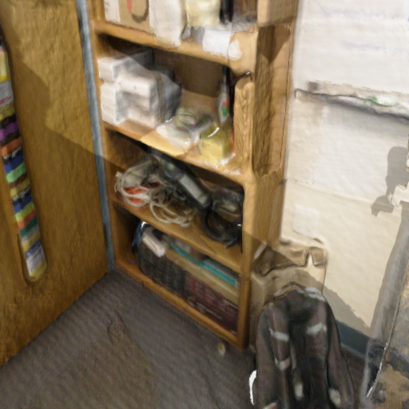
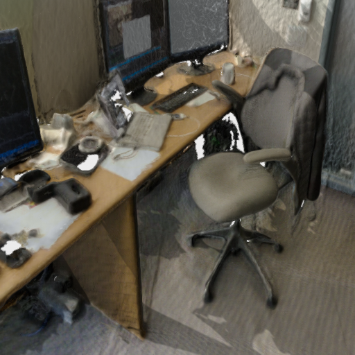
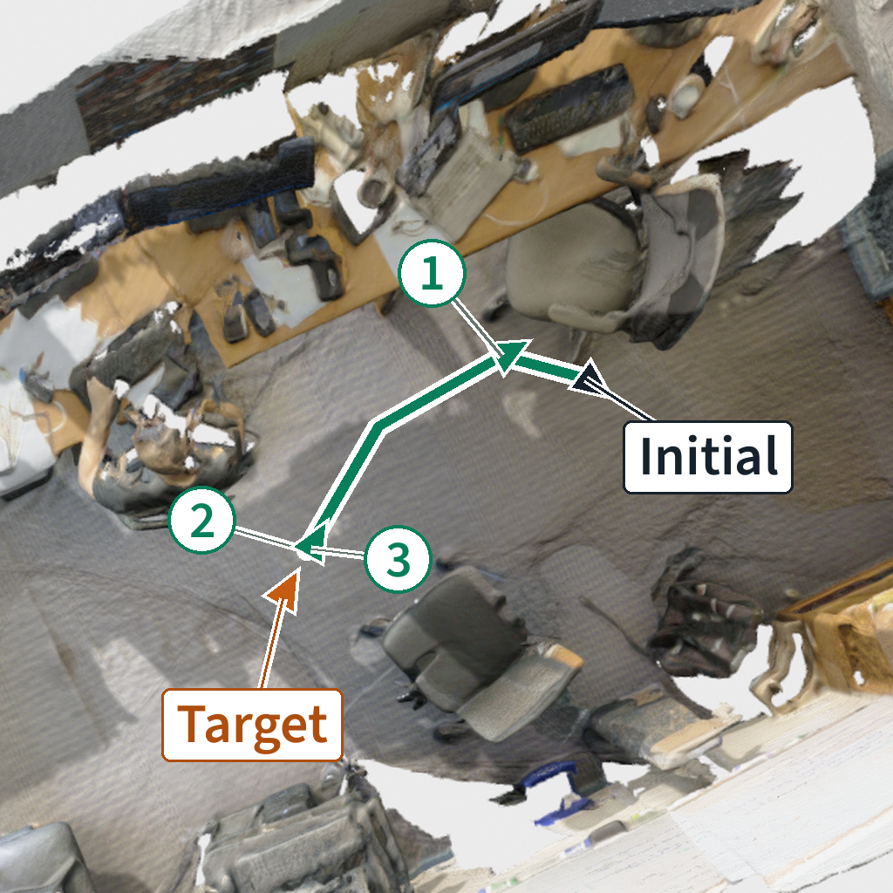

Abstract
Spatial world modeling requires collecting evidence across viewpoints and maintaining it in a persistent state for predictions at unobserved views. However, organizing and accessing such accumulated information over time remains a central challenge. In this study, we introduce the World Turing Machine (WTM), which addresses this through learned read–write computation over an Address–Content memory. This memory evolves with observations while the learned read–write operations remain fixed at inference. Before each write, the Reader predicts incoming visual features from the current memory and the condition. The Writer reuses the Reader’s access weights to correct Content with prediction residuals and update Address with observation-derived geometric evidence. Local and global predictive objectives train acquisition, retention, and inference across viewpoints without directly supervising memory. The same Reader supports forward prediction at unvisited poses and inverse pose matching against target-frame features, without an additional localization head. On ScanNet, WTM outperforms evaluated novel-view synthesis and feed-forward 3D reconstruction baselines in held-out feature prediction. With a simple search over candidate poses, WTM achieves 68.5% success on ViewSuite tasks without task-specific policy training, surpassing ViewAgent by +15.9 percentage points, with lower computation and latency. Analyses reveal emergent spatial organization during online memory formation and show that the learned read–write mechanism generalizes across 3D environments.
Delta-based read-write shared routing
When a new observation arrives, how do we decide which memory slots should receive its information, and how much each slot should receive?
The slots that contribute to predicting a patch should also incorporate new evidence from that patch.
1. Pre-write read
Predict the incoming view
2. Write in
Incorporate new evidence
Current memory
Unchanged by reading
Reuse Reader attention as routing
Guide where and how much to write.
Updated memory
New evidence incorporated
WTM supports planning
Imagining unvisited views supports decision making.

Initial view
Target view
Exploration pathWe test whether WTM’s ability to imagine and predict can support decision making on ViewSuite IVP, a multi-turn planning task that requires an agent to move to a target view.
With a simple greedy search rule and no task-specific policy training, WTM achieves 56.8% success, with lower computational cost and latency than the task-trained VLM ViewAgent-7B.
| Method | IVP | P2V | V2P | All | Latency (s) | TFLOPs |
|---|---|---|---|---|---|---|
| General VLMs | ||||||
| GPT-5.4 Pro | 18.5 | 53.1 | 50.7 | 40.8 | — | — |
| Qwen3.5 | 4.3 | 39.7 | 35.5 | 26.5 | — | — |
| Qwen2.5-VL | 2.5 | 29.5 | 24.2 | 18.7 | — | — |
| Task-trained VLM | ||||||
| ViewAgent-7B | 47.8 | 57.3 | 52.8 | 52.6 | 1.2 | 68.9 |
| Iterative inverse matching | ||||||
| VGGT-Ω | 19.1 | — | — | — | 15.6 | 291.5 |
| FSM-LVSM-3D | 16.2 | — | — | — | 69.9 | 1985 |
| WTM | 56.8 | 66.4 | 82.3 | 68.5 | 0.3 | 25.9 |
IVP success; P2V/V2P accuracy (%). Latency and computation are measured per IVP decision, averaged over 10 steps on a single A100 GPU. Inverse-matching methods use the same search procedure.